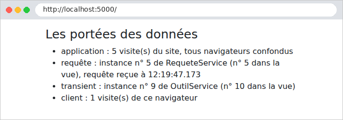

6. Portées des données
Une application web sert de nombreux utilisateurs à la fois, et chacun d'eux enchaîne de nombreuses requêtes. Une donnée peut donc être partagée à trois niveaux, qu'on appelle sa portée :
- la portée application : la donnée est partagée par tous les utilisateurs, pendant toute la vie du serveur (la liste des médecins, par exemple) ;
- la portée requête : la donnée n'existe que le temps de traiter une requête (le modèle d'une vue) ;
- la portée client : la donnée est propre à un utilisateur, et doit survivre d'une requête à la suivante (la langue choisie, l'utilisateur connecté).
Le cours d'origine ([ASP.NET MVC], 2013) utilisait pour cette dernière portée la session : une mémoire, tenue par le serveur, propre à chaque navigateur. [ASP.NET Core] la propose encore ([AddSession]), mais ce document, comme l'étude de cas, s'en passe : les données de portée client sont gardées par le navigateur, dans des cookies. Le serveur ne garde rien entre deux requêtes d'un même utilisateur : on dit qu'il est sans état ([stateless]). C'est ce qui permet, par exemple, de faire tourner plusieurs serveurs identiques derrière un répartiteur de charge. La contrepartie : un cookie est sous le contrôle de l'utilisateur, qui peut le lire et le modifier. On n'y met donc que des données sans secret, ou des données signées ou chiffrées par le serveur, qui détecte alors toute modification : c'est le cas du cookie de [TempData] (exemple 20) et du jeton d'authentification (chapitre 8).
Côté serveur, les portées application et requête correspondent aux durées de vie des services de l'injection de dépendances (cf. exemple 06). [ASP.NET Core] en connaît trois :
Enregistrement | Durée de vie | Une instance... |
AddSingleton | application | pour toute la vie de l'application, partagée par toutes les requêtes |
AddScoped | requête | par requête HTTP, partagée par tous ceux qui la demandent pendant cette requête |
AddTransient | aucune | à chaque injection : deux demandes, deux instances |
6.1. Exemple 23 : trois portées
Le fichier [Services/CompteurService.cs] :
- ligne 7 : le service sera un singleton (cf. [Program.cs]) : son champ [total] est donc de portée application ;
- ligne 11 : un serveur web traite plusieurs requêtes en même temps, sur plusieurs fils d'exécution ([threads]). Si deux requêtes exécutent [total++] au même instant, elles peuvent lire toutes deux la même valeur, et une incrémentation est perdue. [Interlocked.Increment] fait la lecture, l'addition et l'écriture en une seule opération indivisible. Un service singleton doit toujours se méfier de ces accès simultanés.
Le fichier [Services/RequeteService.cs] :
- ligne 7 : un champ [static] appartient à la classe, et non à une instance : il est commun à toutes les instances. Il compte les instances créées ;
- ligne 9 : chaque instance reçoit un numéro à sa création. Le service sera de portée requête : le numéro change à chaque requête.
Le fichier [Services/OutilService.cs] :
Le même compteur d'instances, pour un service [transient].
Le fichier [Program.cs] :
- lignes 10-12 : les trois durées de vie ;
- lignes 23-26 : un middleware range l'heure de réception de la requête dans [HttpContext.Items], un dictionnaire qui naît et meurt avec la requête. Tout ce qui traite la requête (filtres, contrôleur, vue) peut y lire et y écrire. C'est l'équivalent de [res.locals] d'[Express].
Le fichier [Controllers/PorteesController.cs] :
- ligne 8 : les trois services sont injectés ;
- lignes 15-18 : la portée client : un compteur gardé dans un cookie. [Request.Cookies["mesVisites"]] lit le cookie envoyé par le navigateur ([null] à la première visite). [int.TryParse] le convertit en entier ; si la conversion échoue, [mesVisites] vaut 0. L'action l'incrémente et redépose le cookie ;
- ligne 19 : les valeurs sont passées à la vue.
Le fichier [Views/Portees/Portees.cshtml] :
- lignes 3-4 : la directive [@inject Type Nom] demande un service à l'injection de dépendances, et le range dans une propriété de la vue. La vue est exécutée au cours de la même requête que l'action : on va pouvoir comparer les instances reçues par le contrôleur et par la vue ;
- ligne 9 : la valeur de portée requête, déposée par le middleware.
Une page, à l'URL http://localhost:5000/ :

Simulons deux navigateurs avec [curl] et deux fichiers de cookies, [a.txt] et [b.txt]. Le navigateur A fait deux requêtes, puis le navigateur B une, puis A une dernière :
(seuls les éléments de la liste sont reproduits). On constate que :
- le compteur application compte toutes les visites : 1, 2, 3, 4 ;
- chaque requête a sa propre instance de [RequeteService] : 1, 2, 3, 4. Au cours d'une requête, le contrôleur et la vue reçoivent la même instance ;
- chaque injection de [OutilService] crée une instance : le contrôleur et la vue en reçoivent deux différentes, et chaque requête en crée deux nouvelles ;
- le compteur client est propre à chaque navigateur : A en est à 3 visites, B à 1.
Le cookie est sous le contrôle du client, qui peut envoyer la valeur qu'il veut :
Pour un compteur de visites, c'est sans importance. Pour une donnée sensible (l'identité de l'utilisateur, son rôle), le serveur doit pouvoir détecter une falsification : le chapitre 8 montre comment.
Une règle découle de ces durées de vie : un service ne doit pas dépendre d'un service de durée de vie plus courte. Un singleton qui recevrait un service [Scoped] le garderait pour toujours, bien au-delà de la requête pour laquelle il a été créé. [ASP.NET Core] vérifie cette règle au démarrage, en mode développement, et refuse de démarrer si elle est violée. Dans l'étude de cas :
Portée | Données | Où ? |
application | listes des médecins et des clients, dictionnaires, captchas en attente, compteurs de tentatives | services singletons ([CacheListes], [Traducteur], [CaptchaService]...) |
requête | accès à la base ([DbContext]), dépôts, couche métier, modèle commun des vues ; utilisateur connecté | services [Scoped] ([RdvMedecinsDbContext], [MetierService], [ApplicationModel]...) ; [HttpContext.User], [HttpContext.Items] |
client | jeton d'authentification, langue, message flash | cookies |